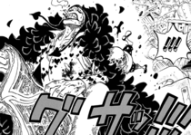

- Profile
- History
- Community
Past
-The Tragedy of Flevance
Law was born in the country of Flevance in the North Blue, which was known as the "White City" for the color of the Amber Lead that was mined there. He lived there with his parents, who were doctors and were likewise training him, and his younger sister. Law's childhood coincided with the time when the symptoms of Amber Lead poisoning were at their peak within the country, and he was doomed to die before reaching adulthood. The kingdom was at war with neighboring countries who mistakenly believed that the disease was contagious. The World Government and the royal family knew about the sickness beforehand but did not disclose this information to the public, even when the symptoms were becoming more noticeable. His parents were doing all they could to help the people but couldn't do much without proper supplies. What's more, Law's sister, who was in an advanced stage of the disease, was slowly dying. A local nun was collecting children to be taken off the island during the war and offered Law to come with her. He declined as he didn't want to leave his sister behind, but the nun promised to come back for him. However, an extermination crew shot his parents before his very eyes. The nun and his friends were likewise killed in the raid and his parents' hospital was burned down with his sister inside during the destruction of the country. An emotionally wrecked Law managed to escape the quarantine by hiding under dead bodies being shipped outside the city. Having lost everything and a wrong levied against everyone dear to him, Law became nihilistic and omnicidal, wishing to destroy as much of the world as he could without believing in anything anymore.
-Meeting Doflamingo and Corazon

From there he arrived at a port town, Spider Miles, he approached the Donquixote Pirates and asked Doflamingo to let him join while strapping himself with bombs. With the time he had, Law wanted to destroy as much as he could. While speaking with Trebol and Diamante, Law explained that he had around three years to live and reminded them what his goals were. Afterwards, Law met Corazon and showed indifference to his clumsiness. Shortly after Law was informed that Corazon hated kids, the executive threw Law out the window. Law, having survived the fall, was angered at being treated this way out of the blue and swore to kill him. He watched impassively as Corazon burned himself after accidentally setting his feathery mantle ablaze while lighting a cigarette.
At a pizza feast, Lao G told Law about the crew's blood law and Doflamingo warned him not to lay a hand on Corazon. The crew then discovered that Law was sick with the Amber Lead Disease, and Jora incorrectly thought that the disease was contagious, at which Doflamingo corrected her. Doflamingo then questioned Law if there were any other survivors. Law answered that he did not know and revealed that he escaped the extermination of Flevance by hiding in a pile of corpses, causing Gladius to gag. Law then declared that he no longer believed in anything and that he will have his revenge on Corazon. Baby 5 slapped him on the head and warned him about the consequences, which included torture. Law merely glared at Baby 5, causing her to cry. Later on, while most of the crew was out raiding and discussing on Law's past, Law snuck up on Corazon while he was alone and stabbed him from behind. However, he was seen by Buffalo, who was shocked at seeing Law breaking the crew's blood law.To get away with it, Law bribed Buffalo with ice cream.